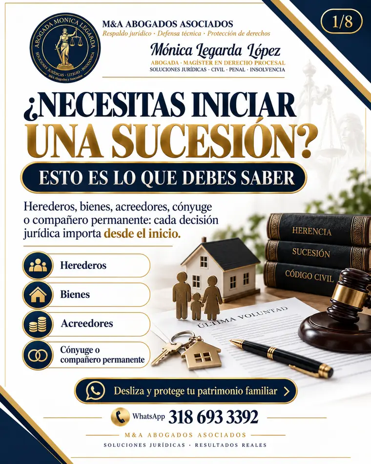

Derecho Civil
Procesos civiles
Procesos declarativos, responsabilidad civil, contratos, compraventa, regulación inmobiliaria y protección patrimonial.
Asesoría y representación jurídica con análisis individual del caso, comunicación clara y una estrategia construida a partir de los hechos, documentos y objetivos del cliente.
Abogada Mónica Alejandra Legarda López
Abogada · Magíster en Derecho Procesal · Técnica en Criminalística · Especialista en Insolvencia de Persona Natural · Conciliadora · 10 años de experiencia profesional
Selecciona un área para conocer el alcance del servicio y acceder a contenido visual que explica los aspectos más relevantes de cada trámite o proceso.
Procesos declarativos, responsabilidad civil, contratos, compraventa, regulación inmobiliaria y protección patrimonial.
Orientación ante capturas, audiencias, defensa técnica y acompañamiento a víctimas, según la naturaleza del caso.
Revisión del título ejecutivo, medidas cautelares, intereses, excepciones y estrategia para cobrar o defenderse.
Apertura, reconocimiento de herederos, inventarios, administración, protección de bienes y partición.
Revisión de obligaciones, acreedores, mora, ingresos, bienes y procesos existentes para definir la ruta jurídica aplicable.
Preparación de la solicitud, relación de acreedores, propuesta de pago y acompañamiento durante la negociación.
Recorridos visuales breves para comprender conceptos, etapas, riesgos y decisiones importantes antes de solicitar una asesoría.

Herederos, bienes, acreedores y derechos del cónyuge o compañero permanente pueden influir en la ruta del trámite.
El derecho civil no es solo litigio. Una revisión jurídica oportuna también puede prevenir conflictos, proteger patrimonio y dar seguridad a negocios y actuaciones sobre inmuebles.
Reclamación o defensa frente a daños contractuales o extracontractuales.
Redacción, revisión, garantías, incumplimiento y formalización.
Revisión jurídica del inmueble, promesa, escritura y registro.
Revisión jurídica y acompañamiento en trámites de división predial.
Orientación en estructuración y formalización jurídica del régimen.
Revisión documental y acompañamiento en ajustes de cabida o linderos, según el caso.
Esta sección es complementaria: te ayuda a ubicar rápidamente el área que podría relacionarse con tu caso. La clasificación definitiva depende de la revisión jurídica.
Puede requerirse revisar si existe título ejecutivo y qué medidas proceden.
Los términos, excepciones, intereses y medidas cautelares deben revisarse oportunamente.
La insolvencia exige revisar obligaciones, mora, acreedores, bienes e ingresos.
Herederos, bienes, acreedores y derechos del cónyuge pueden influir en el trámite.
La prevención jurídica puede reducir riesgos antes de firmar, comprar, vender o formalizar.
Ver servicios civiles →Ante capturas, audiencias o vinculación a un proceso, la oportunidad de la defensa es importante.
Un flujo claro para pasar de la inquietud inicial a una ruta jurídica definida.
Identificamos el problema, la etapa del asunto y el objetivo del cliente.
Analizamos documentos y datos relevantes para comprender riesgos y alternativas.
Explicamos opciones, alcance del servicio, riesgos y siguientes pasos.
Desarrollamos las actuaciones contratadas y mantenemos comunicación sobre el avance.
La denominación del proceso depende de los hechos, documentos, pretensiones y etapa del asunto. Una evaluación inicial permite identificar la ruta posible.
Para el primer contacto puedes describir brevemente tu situación. Antes de remitir información sensible, solicita indicación sobre el canal adecuado.
Sí. La firma presta atención presencial en Pasto y consultas virtuales o telefónicas para otras ciudades, según el servicio.
No. La viabilidad y los resultados dependen de los hechos, documentos, términos legales, autoridades y demás circunstancias del caso.
Cuéntanos brevemente qué está ocurriendo. La consulta inicial permite identificar qué información debe revisarse y cuál puede ser el siguiente paso.
💬 Hablar por WhatsAppUsa los botones para recorrer la guía. También puedes usar las flechas del teclado.